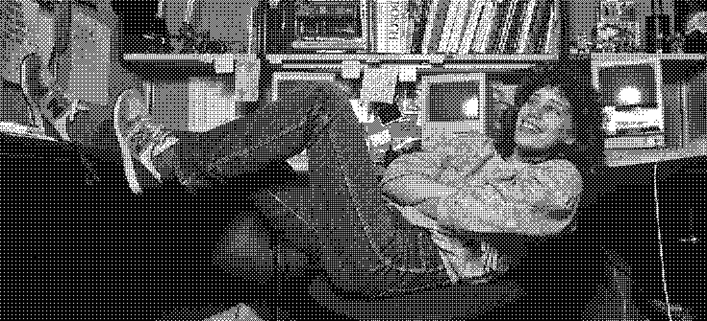
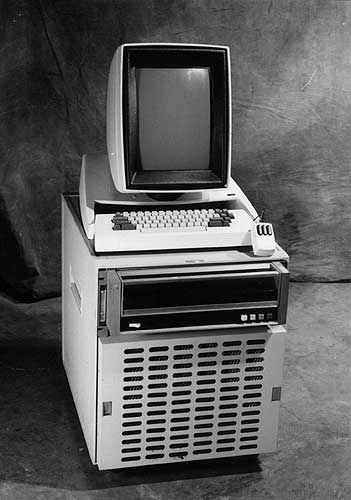
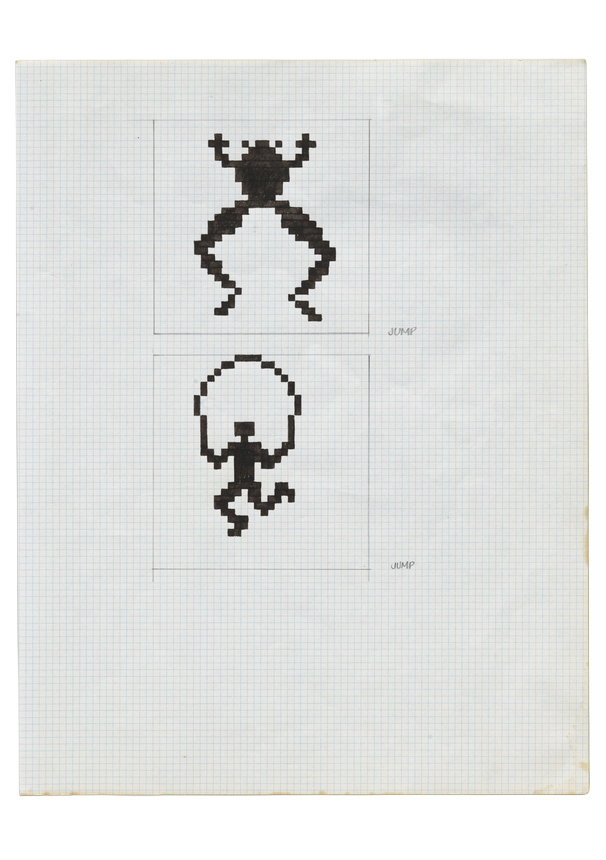

Introduction
Constrained to a 32x32 grid of boxes that will eventually become a “thousand little dots in half an inch” on the screen, Susan Kare created simplified digital icons of everything from a paint bucket to represent “fill” to an uncanny portrait of Steve Jobs, and it is this process that allowed her to define the Apple Macintosh's very look and feel.1 As the graphic designer behind the icons and typefaces of one of Apple's earliest devices, Kare's work is pivotal in the field of user interface design, showcasing how graphical displays were developed early on as well as how features such as user-friendliness and simplicity have carried on in future technologies. Today, her work stands on display as one of the most recognizable icons in the digital world, existing as the lasso tool in online software, art pieces in the vaults of MoMA, and sources of inspiration for new generations of graphic designers.

Susan Kare at desk, 1984, Norman Seef
Background

Xerox Alto
Understanding Kare's icons involves understanding the history of graphical user interfaces (GUIs), which are the systems that allow users to interact and use digital devices with objects such as computer windows, buttons, mouses, etc. Before GUIs were implemented, computers “involved black screens, green text, and arcane commands” that created an unfriendly interface.2 Building upon Ivan Sutherland's 1963 Sketchpad project, one of the first instances of a GUI, as well as Douglas Engelbart's NLS system, which involved a mouse, hypertext, and windows, was the Xerox PARC Alto. This computer transformed the GUI, allowing user interaction with a keyboard and mouse, a raster display, a graphics editor, and a "What You See Is What You Get word processor capable of mixing several font families and font sizes.”3 It is the Xerox PARC Alto, and later the Xerox PARC Star, that famously captivated Steve Jobs in one of his visits to the facilities which “validated and kick-started ideas about the GUI already brewing at Apple”.2 As a result, Apple required an icon and typeface designer, creating a necessary opening that would allow for Susan Kare to enter.
Design
With degrees in English and fine arts as well as experiences in graphic design, museum curation, and sculpting, Susan Kare was an artist with minimal exposure to the developments in Silicon Valley in 1982. Her experiences were deeply rooted in artistic endeavors that at an initial glance have very little to do with computing. Kare cites her experience with mosaics and needlepoint as a “pseudo-digital art form” that translated into bitmap graphics, a transition she cites as “nothing new under the sun”.4 Her experiences connecting textile work and artistic design as a natural translation into computing is reminiscent of the Jacquard loom's famous influence on modern computers through its punch cards. Working at Apple, Kare was tasked with designing small images consisting of unit length squares to represent digital icons. Using graph paper to simulate the digital pixels, she created the basis of the Macintosh 's user interface through a “peculiar sort of minimal pointillism” that represented actions, objects, and processes for the computer.5
"Jump"

"Jump" - Pencil and Ink on Gridded Paper6
Kare's approach to iconography involved cleverness and ingenuity. Translating the computer process “Jump”, she created a “pictogram…designed to be a language intelligible to users in any country” by utilizing both a frog and human performing the action of a literal jump.6Due to the creativity often required for creating a successful icon, Kare describes the process as “solving the little puzzle of making an image fit a metaphor” to allow it to take on a universal nature.7
Command Key
Command Key
Another example of the metaphoric nature of her design process, the Command Key has its origins in a symbol utilized in Swedish campgrounds to signify an interesting sightseeing feature. On discovering the symbol, Kare recalls how she thought that “it's abstract, but it's kind of friendly and it's really easy to express in pixels.”8 It is this exact design philosophy that allows her symbols and icons to remain universal in expressing its function. Because of the ingenuity behind many of her designs, Kare's icons were often described as having a “playful, whimsical quality”, evidenced by the ticking bomb for a system error or the smiling computer icon on startup.2
Translating Back to the Physical
Inspired by Kare's path in a technical field while maintaining individual creative freedom and a sense of whimsy, I decided to translate one of her designs from the digital world back into physical media. On a 8.5 x 5.5 inch piece of fabric obtained for $4 at the UCLA Costume Sale, I carefully sketched a 16x32 grid of pixels. Referencing a diagram of rabbits from Kare's sketchbook while designing the Apple Macintosh, I translated each pixel onto its corresponding textile counterpart. As Kare herself directly cited her experience with textiles and needlework as part of the transition process towards designing the Mac icons, it felt a bit full circle to tie her digitized sketches back to origins in embroidery. Each pixel stitched was no less intentional than each square filled in on the sketchbook, but the time spent was much higher. I worried my hand would cramp and I would get carpal tunnel AGAIN!
Timelapse of 2.5 Hours of Stitching
Impact
With the release of the Macintosh, the user friendly design garnered a large positive response. Quoted from a Rolling Stone feature, journalist Steven Levy highlights Kare's contribution to the device in the following excerpt:
On a pleasant, light background… little pictures called “icons” appear, representing choices available to you. A word-processing program might be represented by a pen, while the program that lets you draw pictures might have a paintbrush icon…. [M]oving the mouse to certain points on the screen opens lists of options known as “pull-down menus.”... Though Macintosh displays only black-and-white video, its “bit mapped” display … allows for gorgeously intricate pictures. Aided by all sorts of “whizzy” (a favorite adjective of the Mac team) features, even a graphic klutz can create fine drawings.9
Beyond its features and technical ability, the Macintosh was widely applauded for its overall usability and friendly user interface, both of which were bolstered by Kare's intuitive designs.
Conclusion
Since the release of the Apple Macintosh, the iconography aspect of GUI has only continued to grow, becoming more detailed in both color, resolution, and style. As the technology develops, its roots remain with Kare's icons which display the ingenuity and thoughtfulness behind design choices in early computer history. Each icon was created with the goal of being as simple and universal as possible: a language understandable without any additional context beyond the simple picture. The Xerox Alto, Apple Macintosh, and similar devices promoted novelty, simplicity, and thoughtful intent, an ideal for all digital technology. Susan Kare's icons showcase the idea that simplicity and efficiency can be captured with careful design, whether it's on graph notebook with carefully filled in squares or a “thousand little dots in half an inch”1 of the screen.
Just Kidding...I have more to say
Researching through endless articles and interviews about Kare's work as well as the overall process of the Mac's creation made me realize how far modern technology design has come since. It is evident that at the very core of any decisions during Kare's time was the users themselves. Whether it be choosing between a bomb icon or an error message, it involved the central question of the best way to make the interface as accessible and intuitive for the customers. In contrast to modern technology, I could not figure out how to turn off the digital rearview mirror in my parent's new car, I refuse to update to Apple's disgusting liquid glass design, and my Instagram keeps rolling out with new features that are both useless and cluttering (If you use instants, threads, or notes, please stop it I do not want to see all that). Perhaps my view on the design philosophy of the past is romanticized and clouded by my lack of firsthand experience, but I view technology in the modern day as being increasingly so focused on maximizing utility that it blocks itself in the process. Where is the soul and heart in the digital world and the endless tools that have been rolled out? There's even more to be said with the onslaught of AI integration in just about everything and how that affects this loss of pureness and creativity in technology, but alas I must put that off for another time.
I AM SORRY FOR TURNING THIS IN 4 DAYS LATE!!!!!
I may have played too much throughout the past few weeks
is it better to ask for forgiveness than permission...